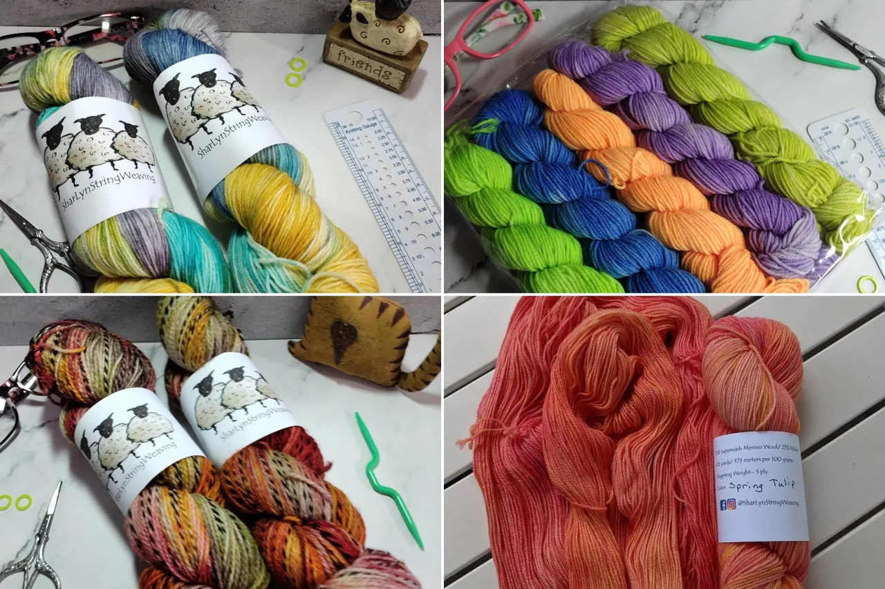
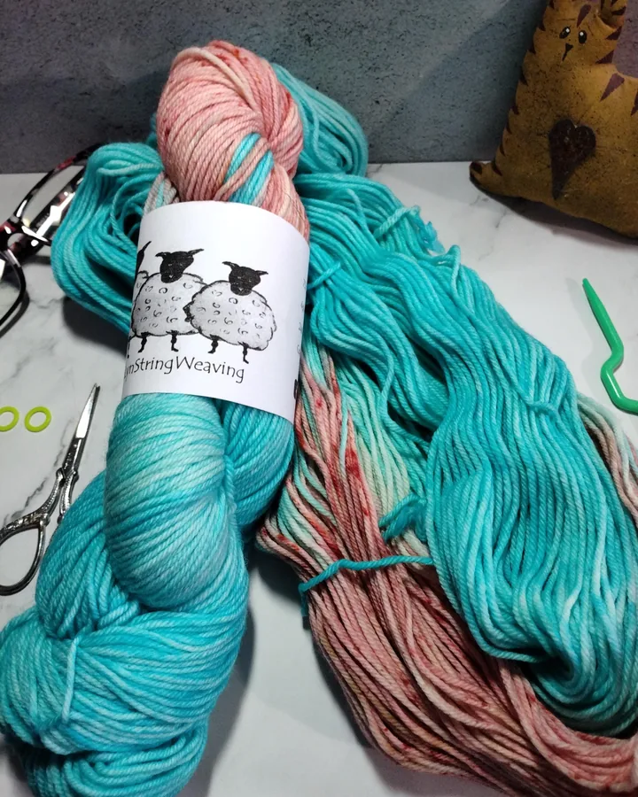
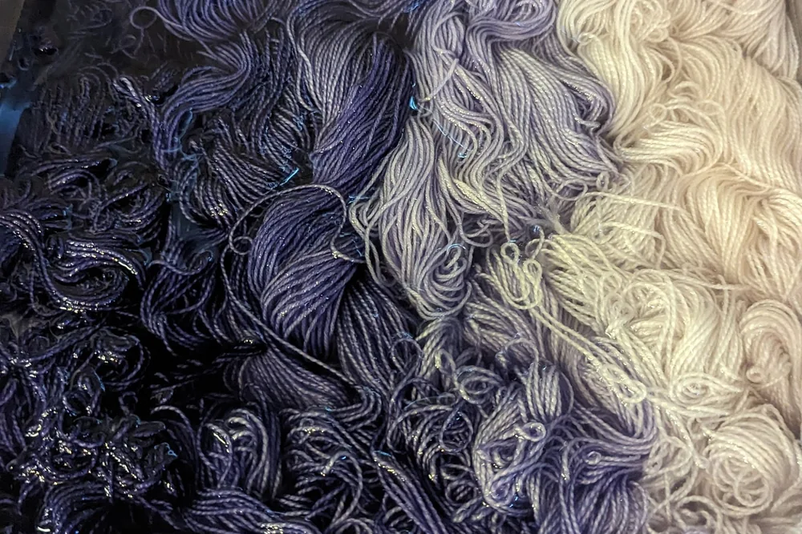
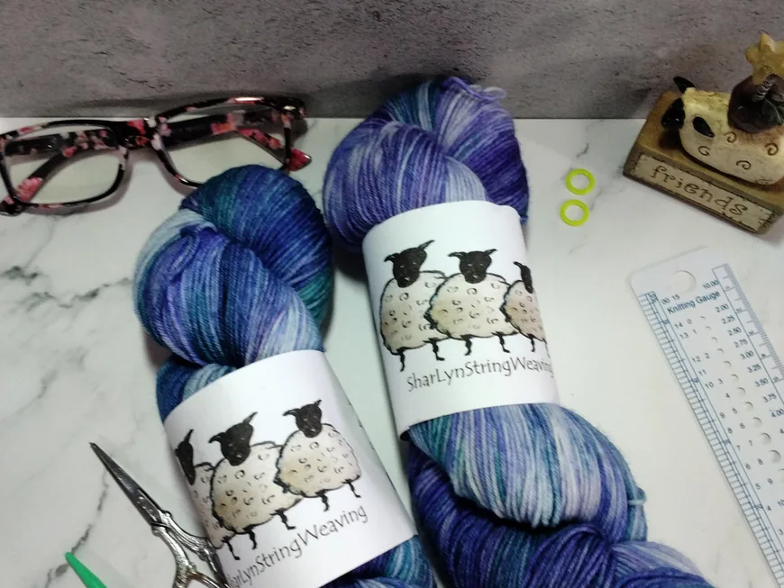
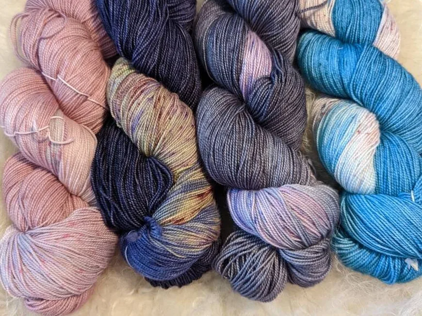
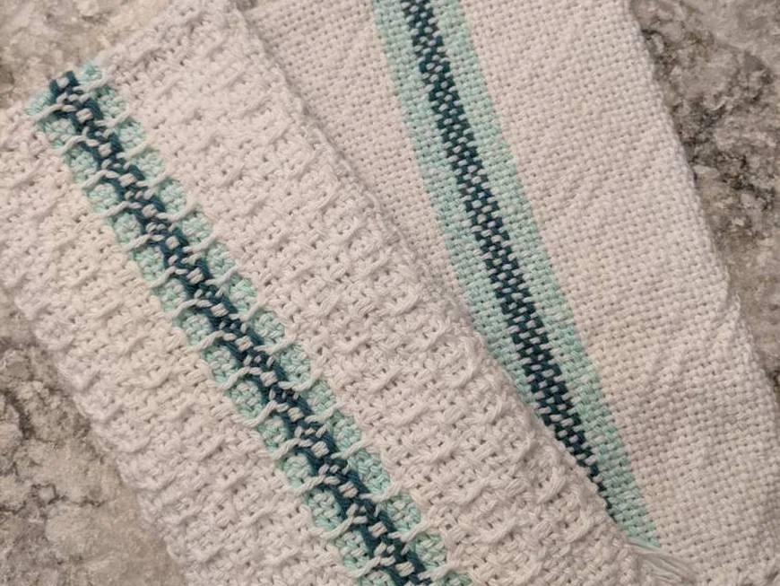
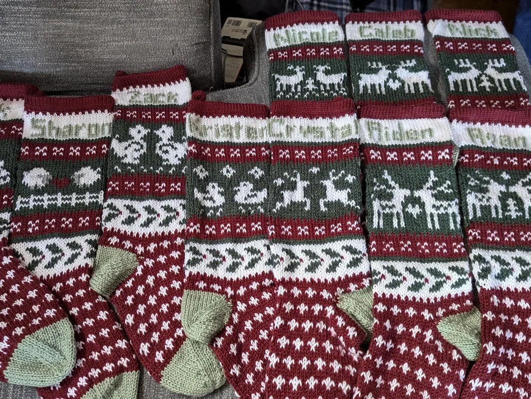

Hand-dyed
Every skein coloured by Sharon.

Indie dyer & weaver
Uniquely dyed yarn and woven items, made just for you.
Meet the Artist
Owner & artist of SharLyn String Weaving
I am a knitter, crocheter, yarn spinner, weaver and dyer. I love to create useful household items, fashionable scarves, wraps and ponchos, and beautifully coloured hand-dyed yarn.
Lover of all things fiber + other things. Knitter, crocheter, spinner, weaver, yarn dyer, grandma, dog, cat, and chicken lover and sourdough baker
Our story

01 How it started
I’m an indie dyer and weaver, and a lover of all things fiber, plus a few other things: I’m a grandma, a dog, cat and chicken lover, and a sourdough baker.
I love to create useful household items like dish towels, place mats and table runners, plus fashionable scarves, wraps and ponchos. I also enjoy creating beautifully coloured hand-dyed yarn.
All items are handmade by me, and any item can be custom made to specific sizes and colours.
— Sharon
02 Where & how it’s made
Tell me the colours you are dreaming of. I’ll dye a custom fade set or assigned pooling yarn and send photos along the way, so it’s exactly what you want.

03 What makes it special
Every skein coloured by Sharon.
Made to your exact choice.
Quick shipping and great communication.
Reviews
What we make
Hand-dyed yarn, assigned pooling and fade sets, hand-woven goods and custom stockings. Here is what you will find in the shop.

Uniquely coloured sock and fingering yarns, including 100% merino wool.

Custom-dyed assigned pooling yarn and fade sets in the colours you pick.

Dish towels, place mats, table runners, scarves, wraps and ponchos.

Custom knit Christmas stockings, made just for your family.
Everything is sold through the online shop, with secure checkout and buyer protection.
Stay in the loop
Sign up to be the first to know about sales and new products.
You’re in! 🎉
Continue to the shopHand-dyed yarn and hand-woven goods made by Sharon. Follow along on Instagram for new colourways!
Visit the shopFind me elsewhere